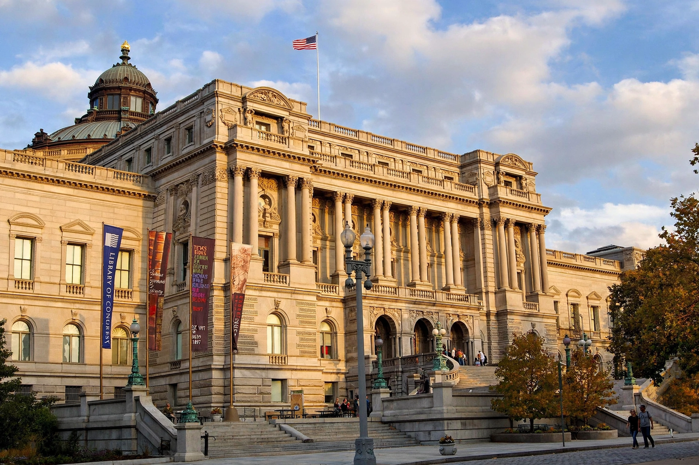

Library of Congress

| Established | 24 April 1800 |
|---|---|
| Location | Capitol Hill, Washington, D.C. |
| Collection | More than 175 million items |
| Head | Librarian of Congress |
| Buildings | Thomas Jefferson, John Adams and James Madison buildings |
The Library of Congress (LOC) is a research library in Washington, D.C., that serves as the research arm of the United States Congress and is the de facto national library of the United States. Founded in 1800, it is one of the largest libraries in the world, holding more than 175 million items in some 470 languages — books, manuscripts, photographs, maps, sheet music, sound recordings and films — on approximately 850 miles of shelves. Although formally the library of Congress, it is open to the public and its reading rooms serve researchers from around the world; any person aged 16 or older may obtain a reader card.
History
Congress established the library in 1800 with a $5,000 appropriation for a reference collection housed in the Capitol. British troops burned the Capitol, and the library with it, in 1814 during the War of 1812; the retired president Thomas Jefferson then sold Congress his personal library of 6,487 volumes in 1815 for $23,950, more than doubling the collection and establishing its universal scope. A further fire in 1851 destroyed some 35,000 volumes, including much of Jefferson's collection. Under long-serving Librarian Ainsworth Rand Spofford (1864–1897), the library became effectively a national library: the Copyright Act of 1870 centralised U.S. copyright deposits in the library, feeding its growth, and Spofford secured the monumental Thomas Jefferson Building (opened 1897), a Beaux-Arts showcase across from the Capitol. The John Adams Building (1939) and James Madison Memorial Building (1980) followed.
Functions and services
The library houses the Congressional Research Service, which provides nonpartisan research to members of Congress; the United States Copyright Office; the Law Library of Congress; and the National Library Service for the Blind and Print Disabled. Its classification scheme (Library of Congress Classification) and its subject headings are used by libraries worldwide. The library administers the position of Poet Laureate of the United States, runs the American Folklife Center and the National Book Festival, maintains the National Film Registry and National Recording Registry of culturally significant works, and leads large digitisation programmes making millions of items freely available online. Its treasures include one of three perfect surviving vellum copies of the Gutenberg Bible, the rough draft of the Declaration of Independence, and the papers of 23 presidents.
Librarian of Congress
The library is headed by the Librarian of Congress, appointed by the president with the advice and consent of the Senate for a ten-year term (a limit set in 2015). Carla Hayden, appointed in 2016, was the first woman and first African American to hold the post.